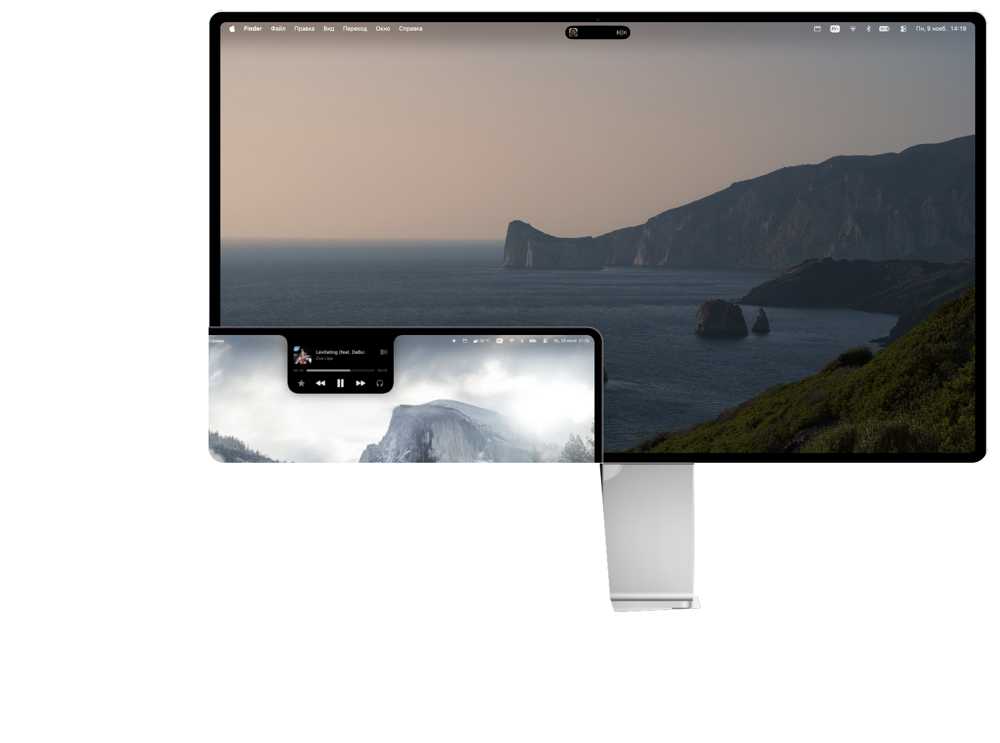
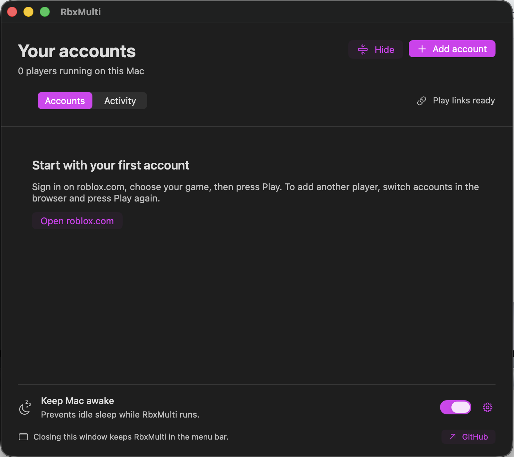
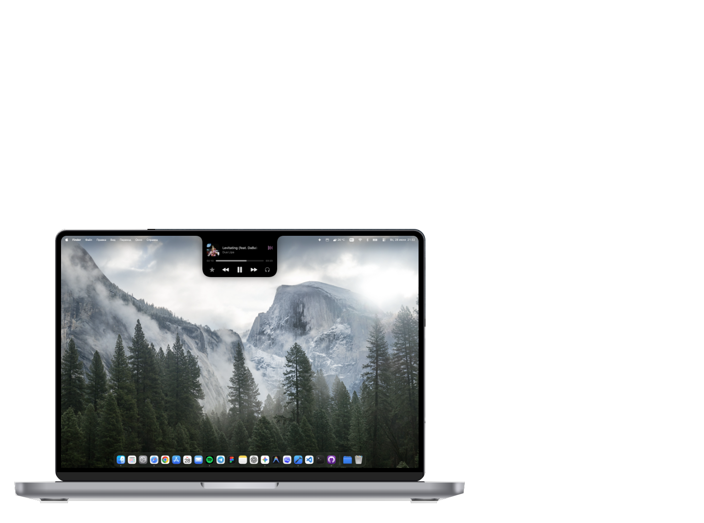

Separate players
Launch another player after switching accounts in your browser.
A native menu-bar launcher for keeping your Roblox players organized, with optional desktop utilities for accessibility and app testing.
Download for Mac


Launch another player after switching accounts in your browser.
See account names, avatars, process status, and recent activity.
Hide the manager window and bring it back when you need it.
Set a click interval for accessibility or app testing. Clicks go to the active app at the pointer position.
RbxMulti checks for new versions and installs cryptographically verified updates in the background.
After the ZIP downloads, open it in Downloads and drag RbxMulti.app into Applications. Open the app from Applications. A browser can’t install a ZIP directly into that folder.
Compatible with macOS Ventura 13 or later, including Sonoma 14, Sequoia 15, Tahoe 26, and Golden Gate 27. Supports Apple silicon and Intel; Roblox must already be installed.
Need help installing, switching accounts, or setting Accessibility and Input Monitoring permissions for the clicker? Read the user guide or troubleshooting steps. To report an issue, visit GitHub.